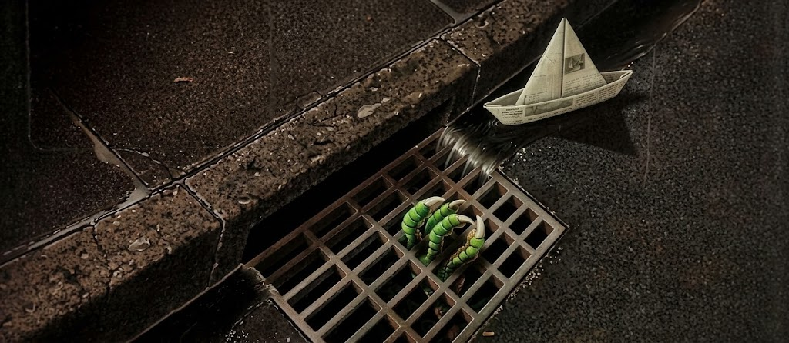

Once Upon a Page
Once Upon a Page

It
A group of outcast children in a small town face a shapeshifting evil that wakes every few decades.
The Paper Boat

The terror begins, as far as anyone knows, in the fall of 1957 and does not end for another 28 years. It starts after a paper boat made from newspaper floats into a gutter “swollen with rain.” It has been raining steadily for a week now, and the power has gone out in most sections of Derry. A small boy in a yellow slicker and red galoshes trails after the boat. He is George Denbrough—a six-year-old with a ten-year-old older brother, Bill Denbrough, known at Derry Elementary School as “Stuttering Bill.” Bill currently has the flu and sits in bed while his mother, Sharon Denbrough, plays Für Elise on the piano in the family’s parlor.
Meanwhile, the Public Works Department, including the Denbrough boys’ father, Zack Denbrough, works to maintain Jackson Street. They remove the sandbags they stacked to prevent the Kenduskeag River from rolling into town. Such a flood occurred once before in 1931. Zack figures that, once the Bangor Hydro dam goes in upstream, the river will cease to be a threat. The important thing now is to get the power back on and forget about the rest. This habit of enduring tragedy, then forgetting about it is characteristic of Derry, which Bill Denbrough will come to learn in time.
George splashes along in the water that carries his paper boat “from one side of Witcham Street to the other.” George is happy to play in the rain, not realizing that, as he sprints to catch the boat, he is also sprinting to his death. He is overwhelmed by love and appreciation for his brother Bill and wishes that Bill could be there with him. He races down toward the intersection to catch up with the boat.
The scene flashes back to the moments before George leaves the house to go play. Bill is sitting up in bed and has just finished making the paper boat. He asks George to go to the basement to get him the paraffin wax, a knife, a bowl, and a pack of matches. George’s mother starts playing a piece on the piano that sounds “dry and fussy.” George reluctantly goes down to the cellar, which he does not like. He suspects that something is down there, in the dark. He knows this is silly, for his parents say so—and, more importantly, Bill says so. Still, the cellar has a smell— the smell of It, “a creature which would eat anything but which was especially hungry for boymeat.”